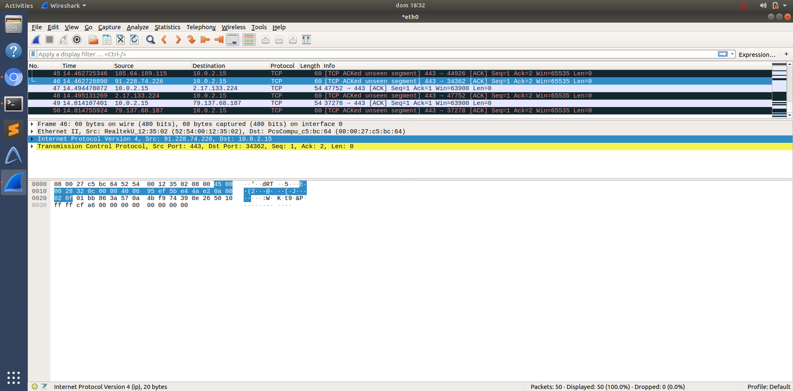
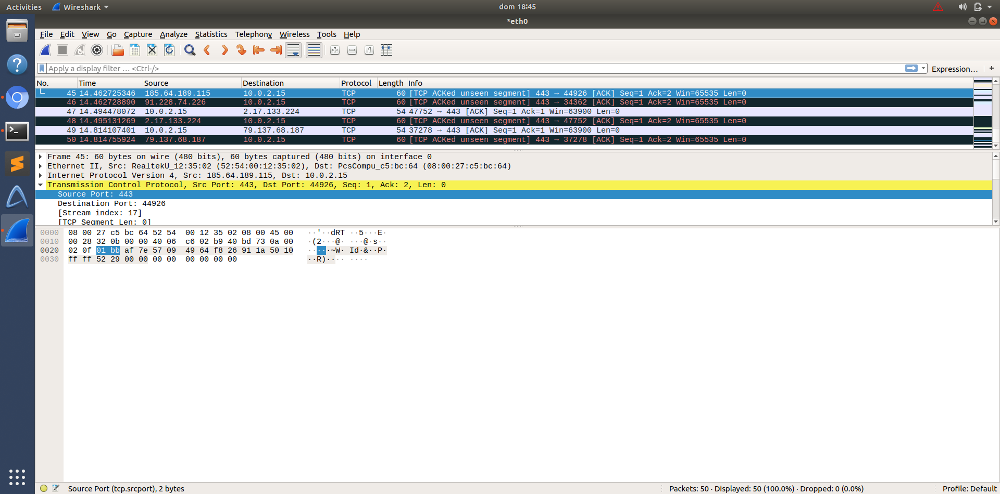

FTEL · Laboratorio 8 · 2020
Primera lectura real de una red con Wireshark.
Práctica de laboratorio centrada en identificar cabeceras IP y TCP, interpretar puertos y seguir el camino de los paquetes mediante ping y traceroute, relacionando cada salto con su RTT.
El formulario original incluía datos académicos y correo, por lo que no se publica. Se mantienen únicamente las capturas de tráfico generadas durante la práctica y una síntesis técnica de los resultados.
Análisis
Del paquete a la ruta.
IPv4
Localización de las direcciones origen/destino dentro de la cabecera y lectura del orden de bytes.
TCP
Identificación de puertos de transporte sobre tráfico real capturado.
Ping
Medición de conectividad y tiempos de ida y vuelta.
Traceroute
Seguimiento de saltos hasta un destino remoto y observación del incremento de latencia.
Evidencias
Capturas Wireshark.

